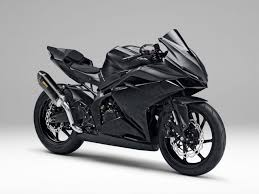

სპორტული მოტოციკლები
სპორტული მოტოციკლები შექმნილია მაღალი სიჩქარისა და სიზუსტისთვის. ისინი მსუბუქი, აეროდინამიკური და ძლიერია.
ამ ტიპის მოტოციკლებს ხშირად იყენებენ რბოლებზე. მათი მთავარი უპირატესობაა სწრაფი აჩქარება და მაღალი მანევრირება გზებზე.